この演習室のコンピュータは普通のパソコンですが，この講義は Windows ではなく Linux を使って進めます．実社会では Windows が９割以上を占めるため，その使い方について学ぶことは非常に重要ですが，この講義ではこではコンピュータの使い方（あるいは Windows の使い方）よりももっと基本的な，コンピュータというシステムを形作っているさまざまな考え方に触れる事を目指したいと考えています．
この講義では，皆さんのコンピュータの使用経験にかかわらず，皆，同じスタートラインに立つものして進めますります．
※ この講義（および，続く「情報処理II」「情報処理III」等）では Linux (VineLinux 2.6) を使用します．
演習室にあるコンピュータの本体は，実際には３つのタイプが存在します．
CPUとメモリコンピュータは計算をする機械ですが，そのためには計算の対象となるデータや計算の手順をどこかに覚えておく必要があります．そのための機構がメモリであり，CPU (Central Processing Unit: 中央演算処理装置) は，メモリから計算の手順やデータを取り出しながら計算を進め答えを求める，コンピュータの心臓部です．CPUの計算は一定のタイミングに沿って規則的に進められますが，そのタイミングは動作周波数（動作クロック）で決まります．この値が高いほど，速く計算できることになります．2GHz（ギガヘルツ）は2×109Hzです．またメモリが大きいほどたくさんのデータやプログラムを一度に扱えることになります．512MB（メガバイト）は512×1024×1024バイト，英字で５億文字あまりを記憶できます．教科書の２～４ページを読んでください．ちなみに Pentium, Celeloon, Athron, Duron, PowerPC などは，CPU に付けられたブランド名です．
それぞれのパソコンはこの教室内のローカルエリアネットワーク (LAN) に接続され， 和歌山大学全体の LAN を通じて大学の外のネットワーク，いわゆるインターネットに（常時）接続されています． したがって，皆さんはこのコンピュータを使っていつでも自由に電子メールを送ったり Web サーフィンを行うことができます．もちろん，ワープロを使ってレポートを書いたり，自分の Web ページや CG を作ったりすることもできます．
皆さんがこのコンピュータ上で作成したファイル（データやプログラム等）は， LAN を介して別の場所にあるファイルサーバと呼ばれるコンピュータに保存されます． したがって，この教室のどのコンピュータを使っても， 以前に保存したデータやプログラムを取り出すことができます．また，電子メールはメールサーバに蓄えられます．なお下図の RAID ドライブは，冗長構成をとることによって装置の一部が故障してもデータは保全される記憶装置です．

コンピュータとコンピュータの間にある白いディスプレイは，教材提示装置のものです． ここには教員用のコンピュータの画面やビデオ，スライド等を表示します．教員の指示に従って電源を入れてください．

皆さんは，ここ（システム工学部A棟601号室）を含めて，以下の場所にあるコンピュータを使用できます．
システム情報学センターには， ３つの演習室に加えて２つのオープンスペースラボラトリー (OSL)があり， 自習等に使用することができます．

大学内のコンピュータを使用する場合は，いくつかの注意点があります． 特に，演習室では以下の行為は厳禁です． 利用マナーが悪い場合は，ユーザアカウント（利用権）を停止する場合があります．
上記のほかにも，大学のコンピュータやインターネットを使用する上での注意事項があります．一つはセキュリティ上の事項，もう一つは法律上の事項です．教科書の８～１０ページをよく読んでください．以下に，この演習室特有の事項について述べます．
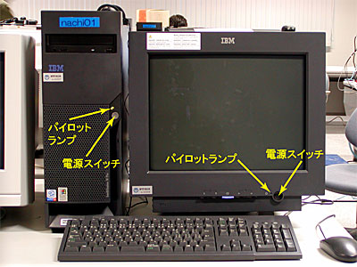
電源を入れると，最初にオペレーティングシステムの選択画面が現れます．
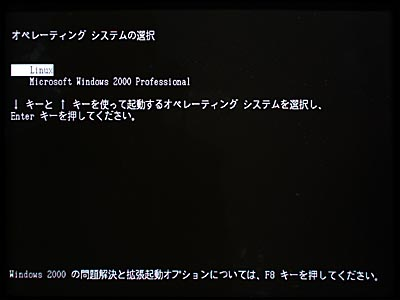
このまま何もせずにいれば，10 秒後に Linux (現在は VineLinux 2.6) が起動します．すぐ起動したければ[Enter] キーをタイプしてください．
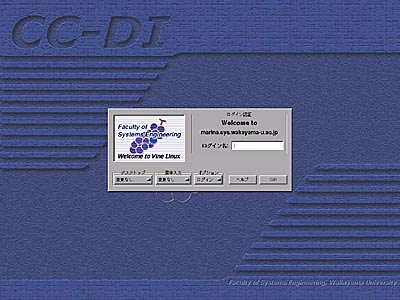
コンピュータの起動に成功すると，上のようなログインウィンドウが現れます．もし Windows 2000 Professional を起動してしまったときは，[Ctrl] キーと [Alt] キーを同時に押しながら [Delete] キーをタイプ (Ctrl-Alt-Del) し， Windows 2000 のログインパネルから再起動を選んでください．
オペレーティングシステムというソフトウェアには，大雑把に言って次の２つの役割があります．
コンピュータは CPU をはじめ，メモリ，ハードディスク，ディスプレイ，キーボード，マウスなど，数多くの部品で構成されています．このような部品や，その部品の集まりであるコンピュータの本体のことを，私たちはコンピュータのハードウェアと呼んでいます．私たちがコンピュータを使うときは，このハードウェアの機能をうまく組み合わせることによって，目は，その使い方に関する知識が必要になります．例えばワープロに１文字打ち込むというなんてことはない作業でも，タイプされたキーの文字が何であるかを調べ，それを画面に表示し，記憶している文書の中に挿入する，という個々の細かな知識（手順）をコンピュータが知っているからこそ実現できるのです．このような知識のことを，私たちはコンピュータのソフトウェアと呼んでいます．
そして，このソフトウェアのうち，利用者が実際に仕事をするために使うワープロなどのソフトウェアのことを，アプリケーションソフトウェアと呼びます．一方，コンピュータのハードウェア自体を制御したり，アプリケーションソフトウェアがハードウェアの機能を使うときに，その仲立ちをするための知識として働くソフトウェアのことを，システムソフトウェアあるいはオペレーティングシステム(OS)と言います．
コンピュータの個々の部品や，それらが果たす機能（CPUなら計算する機能，メモリやディスクなら記憶する機能）は有限ですから(無限に速く計算することもできないし，記憶できる情報の量にも限界がある)，これらは限りある資源のようなものです．したがって，このようなものをコンピュータの資源（リソース）と呼んだりします．
オペレーティングシステムは，この資源を効率よく使えるように管理するソフトウェアです．そしてオペレーティングシステムは，アプリケーションソフトウェアに対して，自分が管理しているハードウェアの機能を使用するための抽象化されたインタフェースを提供します．
キーボードのキーにはいくつかの種類があります．

キーボードにはこのほかに矢印キーや種々のファンクションキーがありますが， それらに付いては適宜解説します．
Linux や UNIX 系オペレーティングシステムでは，コンピュータを利用するために，まずそのコンピュータのユーザアカウント（利用権）を取得する必要があります．皆さんのユーザアカウントは，演習室のコンピュータを使用するために，既にシステム情報学センターから取得してあります．皆さんの手元にある「利用承認書」には，そのユーザアカウントを使用するための登録名（ログイン名）と， その暗証番号（パスワード）が記載されています．
演習室のコンピュータを使用するには，まずそのログイン名とパスワードを使って，ログインという作業を行う必要があります．それでは，皆さんがお持ちの利用承認書に書かれているログイン名（ユーザ名）とパスワードを使ってコンピュータにログインしてください．なお，このログイン名とパスワードは，「１．５ コンピュータ演習室について」に挙げたいずれの演習室でも共通に使用できます．また，Windows を使う場合も同じユーザ名とパスワードを使用します．
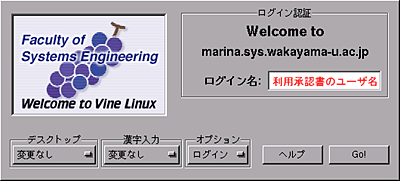
「ログイン名」の欄にログイン名を入力します．承認書に書かれているログイン名を， キーボードをタイプして入力してください．打ち間違えたときは，[Backspace]キーをタイプすれば１文字消すことができます．全部打ち終えたら [Enter] キーか [Tab]キーをタイプしてください． すると打ち込んだユーザ名が消えて，次にパスワードの入力を求めてきます．
今は「デスクトップ」，「漢字入力」，「オプション」は変更しないでください．
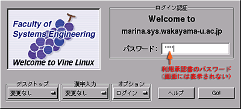
ここには承認書に書かれているパスワードをキーボードをタイプして入力してください．他人に見られないようにするために，タイプしたパスワードは画面には表示されません． 大文字をタイプするには [Shift] キーを押しながらその文字をタイプしてください．
ログイン名やパスワードを打ち間違えたときログイン名やパスワードを間違えると， 上の画面がブルブルと震えた後，再度ログイン名の入力画面が現れます．この場合はもう一度ログイン名から入れなおしてください．
ログインに成功すると次のような画面が現れます．
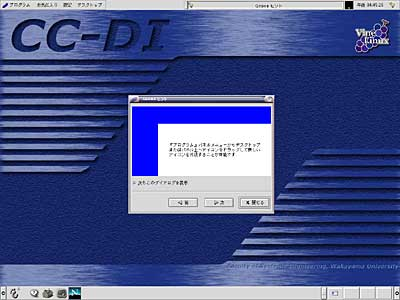
ログイン直後は「Gnomeヒント」というウィンドウが表示されるので，「閉じる」をクリックしてください．
マウスを机の上で滑らすように動かすと， それにつれて画面上の矢印（マウスカーソル，これは場合によって I や時計などいろいろ形を変えます）が動きます．このマウスを動かしてマウスカーソルを“目的地”の上に移動し，そこでボタンを押して，コンピュータの操作をします．
このボタンの押し方には，いくつかのパターンがあります．
コンピュータを起動すると，まずオペレーティングシステムが起動します． このオペレーティングシステムの重要な役割のひとつに， ディスプレイやキーボードなどの入出力装置の管理があります．特に最近のオペレーティングシステムでは， ディスプレイ上に複数の仮想的な画面（ウィンドウ，窓）を開いて複数の作業を同時にこなすことができる ウィンドウシステムを搭載することが一般的です．Microsoft の Windows や Apple の MacOS では，ウィンドウシステムはオペレーティングシステムに組み込まれていますが， この講義で使う Linux や Unix では MIT(マサチューセッツ工科大学） で開発された X Window System という (オペレーティングシステムとは独立した)ソフトウェアがよく使用されます．
ターミナルなどのウィンドウシステムに対応したアプリケーションソフトウェアは，自分が行おうとする画面表示をウィンドウシステムに対して要求します．ウィンドウシステムはこの要求に基づいて画面表示を行います．言わば，ウィンドウシステムはお客の要求にしたがって食事を出すサーバ（給仕）であり， アプリケーションソフトウェアはサーバーに対して要求を出すクライアント（客)の役割を果たします．したがって，このようなソフトウェアの形態をサーバ・クライアントモデルと呼びます．
X Window System では，画面表示用のハードウェア（ビデオカード等）を制御するソフトウェアのことを X サーバ，X サーバに対して画面表示を要求するソフトウェアのことを X クライアントと呼びます．X Window System における X サーバと X クライアント間の通信はネットワークに対して透過的であり，ある X クライアントの画面表示を，LAN 等を介して他のコンピュータ上で稼動している X サーバに出力することができます．
たぶん，画面の左下に，以下のような絵記号の列が描かれていると思います．このようにシンボル化されたオブジェクト（対象）を一般にアイコンと呼びます．画面の下部のアイコンが並んでいる場所は，ここではパネルと呼んでいます．

では，この中のターミナルのアイコンをマウスの左ボタンでクリックしてみてください．すると，下のような“ウィンドウ”が現れると思います．以降，特に断らない限り，「クリックする」と指示された時にはマウスの左ボタンを使ってください．
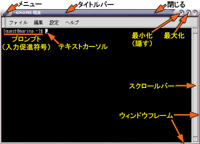
ターミナルは，gnome-terminal というアプリケーションソフトウェアです．この中でさらにシェルと呼ばれるプログラムが稼動しています．シェルはプロンプト（入力促進符号）を表示して，利用者がコマンド（指令）を入力するのを待っています．
このウィンドウの周囲の枠はターミナル自身が付けているのではなく，ウィンドウマネージャという別のソフトウェアが付けています（スクロールバーはターミナル自身のものです)．
ウィンドウを開くと，画面の上部にあるパネルの中にあるタスク・リストに，そのウィンドウを示すボタンが現れます．選択されているウィンドウ（利用者の操作の対象になっているウィンドウ）に対応するボタンは「へこんで」表示されます．隠されたウィンドウに対応するボタンは「グレー」になっています．このボタンをクリックして操作するウィンドウを切り替えたり，ウィンドウを隠したりできます．
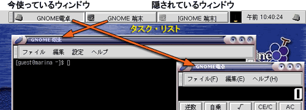
ウィンドウマネージャはウィンドウシステム上の個々のウィンドウを管理し，マウスの操作などの情報をウィンドウシステムやアプリケーションソフトウェアに伝達します．ウィンドウを移動したり，ウィンドウのサイズを変えたり，ウィンドウを閉じたりする操作は，このウィンドウマネージャによって実現されています．
X Window System ではウィンドウマネージャがウィンドウシステムやオペレーティングシステムから独立しているために，ウィンドウマネージャやデスクトップ環境が交換可能です． これらを別のものに交換することによって， コンピュータの画面の見かけや操作方法を全く異なるものに変更することができます．この講義では sawfish というウィンドウマネージャを使用しています．
デスクトップ環境について
ウィンドウマネージャやデスクトップ環境の切り替えは，ログインウィンドウの デスクトップ メニューで行います．最初は GNOME が選択されており， この講義も GNOME を前提にしています．もし他のものを選択した場合は，一旦ログアウトして GNOME に戻すか，自分の選択したものを自分で勉強して使ってください．
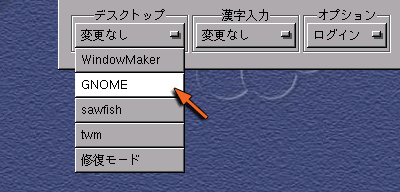
ウィンドウを移動するには，次の２つの方法があります．
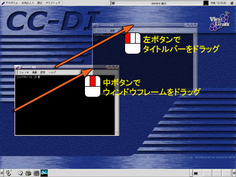
ウィンドウのサイズを変更するには，次の２つの方法があります．
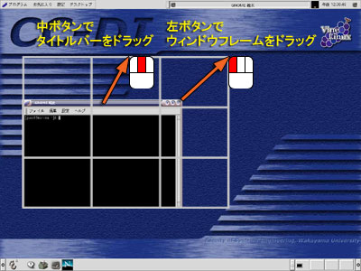
他のウィンドウで隠されてしまったウィンドウを前面に出すには，次の２つの方法があります．


手前にあるウィンドウを奥に送って隠れているウィンドウを表に出す方法は，前節の２と同じです．
ウィンドウを最小化するには，「最小化」ボタンをクリックしてください．
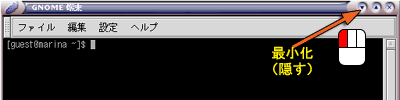
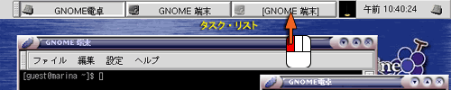
ウィンドウを最大化するには，「最大化」ボタンをクリックしてください．
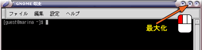
タイトルバーをダブルクリックすると，ウィンドウがを折りたたまれます．

次の２つの方法があります．
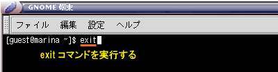
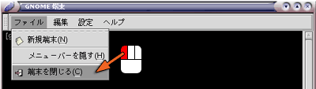
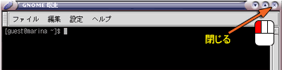
タイトルバーの左端にある「ぶどう」のマークをクリックしたり，「閉じる」ボタンや「最小化」ボタンをマウスの右ボタンでクリックすると，ポップアップメニューが現れます．
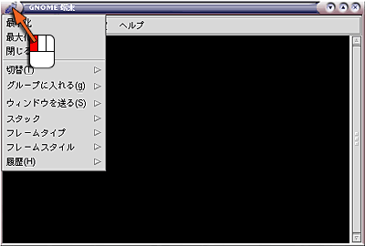
ポップアップメニューからはこれまでに述べたウィンドウ操作のほか，より高度な操作が行えるようになっています．
X Window Ssytem 上で動作しているアプリケーションソフトウェアが通常の方法では終了できなくなったり，「閉じる」ボタンをクリックしてもウィンドウが閉じなくなったときは，強制終了することができます．
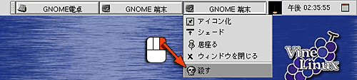
キーボードはマウスと並んで， コンピュータを操作するときにもっとも良く使われる周辺装置 （ペリフェラル）です． これがうまく使えないと，コンピュータそのものが嫌いになってしまうので，キーボードの練習にはちょっと時間を割きたいと思います．
コンソールのウィンドウを一度クリックしてください．そしてキーボードから typing とタイプし， その後 [Enter] キーを押してください．
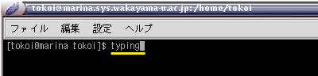
すると，次のような表示が現れます．表示にしたがって練習を進めてください．途中で終了するときは Ctrl-C（[Ctrl]キーを押しながら C のキーをタイプ）してください．
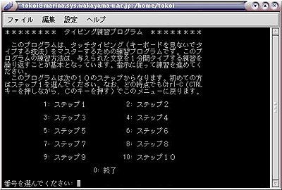
毎回１ステップずつ，１０～１５分くらい練習します．途中「５回繰り返せ」「３回繰り返せ」という指示があると思いますが，時間がないので１回練習したらそのまま次に進んでください．次のステップに移行する時に「次に進みますか」という問い合わせが出るので，とりあえずそこまで進んでください．
この講義の１１回目でタイピング能力のテストを行いますから， うまくできない人は空き時間を使って練習しておいてください．
コンピュータの使用が終わったら， コンピュータにログインする前の状態に戻します．画面の上部にあるメニューのデスクトップの中から，ログアウトを選択してください．
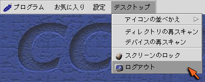
次に，「本当にログアウトしますか？」というウィンドウが現れますので，アクションの中から「ログアウト」を選択し（最初から選択されていると思います），「はい」をクリックするか，[Enter] キーをタイプしてください．これでログアウト完了です．
なお，電源を切る場合は，ここでアクションの中から「停止」を選択して「はい」をクリックしてください．ログアウト後に電源を切る場合は，ログインパネルの「ログイン」の所から「停止」を選んだ後「GO」をクリックするか，電源スイッチを押してください．
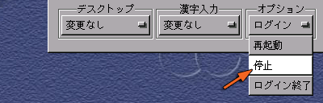
あとはディスプレイと教材提示装置のディスプレイの電源を切ってください．
以下の質問に対する回答をA4サイズの用紙１枚に書き，次回の講義開始時に提出してください．学籍番号と名前を忘れずに記入して置いてください．